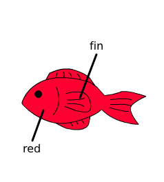

Tomato API を用いることで、チュートリアルで紹介した他にも いろいろな操作を SWF に対して行うことができるようになります。
>>> from tomato import Swf
>>> tank_swf = Swf(open('tomato/sample/mc/tank.swf').read())
>>> tank_swf.size
(240, 266)
>>> tank_swf.width
240
>>> tank_swf.height
266
SWF の画面サイズがピクセル単位で出力されます。
>>> tank_swf.copy()
<tomato.swf_processor.Swf object at 0x51e330>
SWF オブジェクトの deepcopy を作成します。
python の copy モジュールの deepcopy 関数よりも 8 倍程度高速にコピーを生成することができます。
Global 変数に置き換え元の SWF を宣言し、MovieClip の置き換えを行う際に copy() したものを用いる事で、 SWF ファイルを読み込んでパースを行うコストを抑えることができます。
>>> tank_swf.get_movie_clip_name()
['kombu', 'fish1', 'fish2']
>>> tank_swf.get_movie_clip('kombu')
<tomato.structure.MovieClip object at 0x5102d0>
tomato/sample/mc/fish_red_fin.swf は金魚の MovieClip (red) の内部にヒレの MovieClip (fin) があります。
このように入れ子構造の MovieClip を取得したい場合は get_movie_clip_from_parent 関数を用います。
>>> s = Swf(open('tomato/sample/mc/fish_red_fin.swf').read())
>>> s.get_movie_clip_from_parent('red', 'fin')
<tomato.structure.MovieClip object at 0x1b7570>
fin という名前の MovieClip が一つしかない場合は get_movie_clip 関数でも 問題なく取得することができますが、
といったような構造の場合、 get_movie_clip 関数だと SWF の中で最初に 発見された fin MovieClip を取得しようとしてうまくいきません。 このような場合に get_movie_clip_from_parent 関数を用いるとうまく処理を行うことができます。